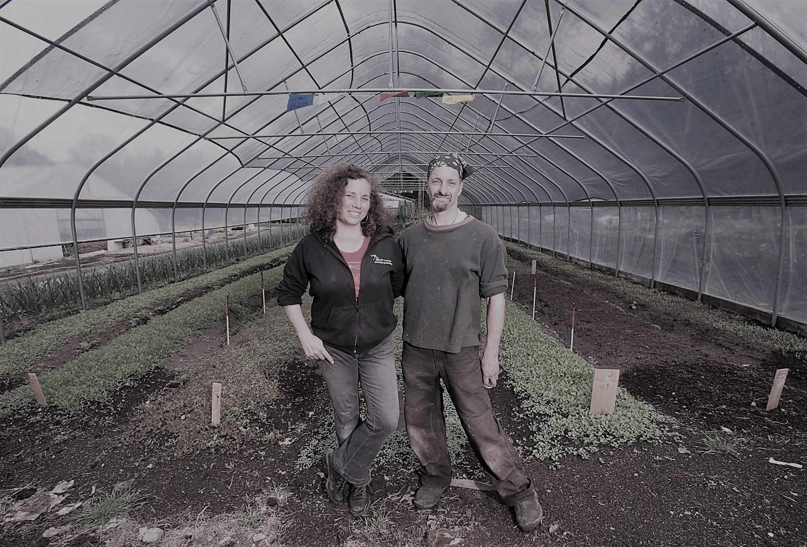

Seeds of Solidarity consists of two entities that are fiscally distinct, but connected by land, spirit and vision: Seeds of Solidarity Farm, and Seeds of Solidarity Education Center Inc, a 501 c 3 non-profit organization with a passionate staff of 4, a sage board of directors, and wonderful community partnerships.
Seeds of Solidarity was founded by Ricky Baruc and Deb Habib who met in 1984 while working at the New Alchemy Institute on Cape Cod MA, a small international organization whose purpose was to “design human-scale, low polluting alternatives to super technology and to design and test intensive food growing methods." New Alchemy’s impact on Ricky and Deb’s lives and that of many others was profound. They spent the next decade or so farming (Ricky) and working in the fields of multicultural and environmental education (Deb). Then in 1994/1995 took part in the International Pilgrimage for Peace and Life, walking from Auschwitz to Hiroshima. Seeds of Solidarity Farm and Education Center was initiated in 1996, in the spirit of New Alchemy and in honor of those around the world helping to feed the people.
The Seeds of Solidarity 30 acre site is located on Chestnut Hill Road in Orange, Massachusetts, one of nine towns in the North Quabbin region. The Quabbin Reservoir was created in the late 1930’s as a water supply for Boston. The flooding of four towns and a fertile valley took much of the region’s agricultural land out of production. When the mills began to close, economic depression was left in the wake. Through the transformation of abandoned land into a bountiful farm, working with neighbors to initiate a flourishing festival, and establishing innovative education programs, Seeds of Solidarity is helping to revitalize the region.